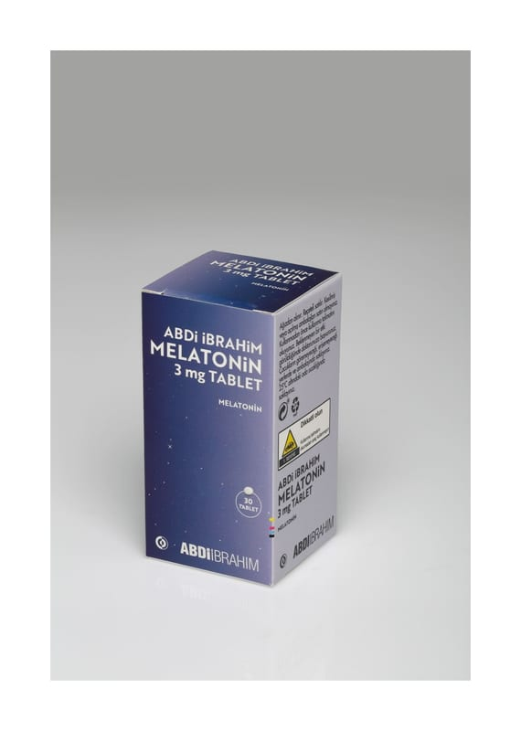

Abdi İbrahim Melatonin 3 MG TABLET

Ne için kullanılır
KT · Bölüm 1ABDİ İBRAHİM MELATONİN, 3 mg melatonin içeren, beyazdan hafif sarıya, yuvarlak bikonveks, her iki yüzü çentiksiz tablettir. 30 tablet içeren ambalajlarda kullanıma sunulmaktadır. Yetişkinlerde saat farkı değişikliklerine bağlı gelişen uyku bozukluğunun (jet lag) kısa süreli tedavisinde kullanılır.
ABDİ İBRAHİM MELATONİN nasıl çalışır? Melatonin, vücudun biyolojik gündüz ve gece ritmini senkronize eden vücut tarafından üretilen bir hormondur. Biyolojik ritim, zaman dilimleri arasında seyahat ederek bozulabilir. Bu saat farkı değişikliklerine bağlı uyku bozuklukları olarak bilinir. Semptomlar ve şiddeti bireyler arasında değişir, ancak genellikle daha kötüdür ve daha fazla zaman dilimi geçildikçe Bu ilacı kullanmaya başlamadan önce bu KULLANMA TALİMATINI dikkatlice okuyunuz, çünkü sizin için önemli bilgiler içermektedir. • Bu kullanma talimatını saklayınız. Daha sonra tekrar okumaya ihtiyaç duyabilirsiniz. • Eğer ilave sorularınız olursa, lütfen doktorunuza veya eczacınıza danışınız. • Bu ilaç kişisel olarak sizin için reçete edilmiştir, başkalarına vermeyiniz. • Bu ilacın kullanımı sırasında, doktora veya hastaneye gittiğ inizde doktorunuza bu ilacı kullandığınızı söyleyiniz. • Bu talimatta yazılanlara aynen uyunuz. İlaç hakkında size önerilen dozun dışında yüksek veya düşük doz kullanmayınız.
daha uzun sürer. ABDİ İBRAHİM MELATONİN, normal gündüz ve gece ritmini düzeltmeye ve semptomları azaltmaya yardımcı olabilir. 5 gün sonra kendinizi daha iyi hissetmiyorsanız veya daha kötü hissediyorsanız bir doktorla konuşmalısınız.